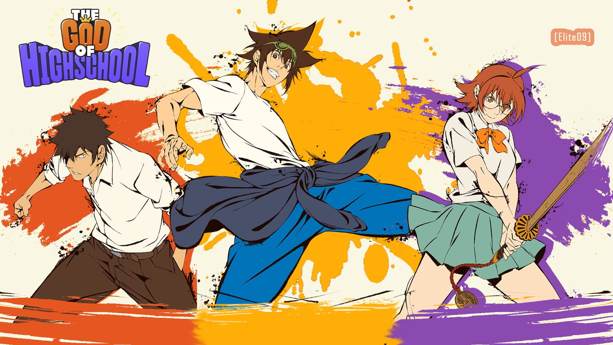

Synopsis
The action anime follows a high school student Jin Mori and his friends as they compete in an epic tournament in which they borrow the power directly from the gods. But not only that, along the way they uncover a mysterious organization who will grant any wish to the tournament's winner.
Review
The freshly finished first season of Crunchyroll’s new original series The God of High School firmly establishes the streaming platform’s slate of original programming as a force to be reckoned with. Based on the webtoon of the same name, The God of High School boasts a distinct visual language that makes it one of 2020’s most compelling new anime series, following in the footsteps of Demon Slayer’s innovative visuals and ascendance as Crunchyroll’s Anime of the Year. But the series also suffers from some of the same problems that plagued Hunter x Hunter, as an excess of ideas make The God of High School’s first season feel overstuffed at just 13 episodes, with the driving thrust of the plot shifting too dramatically for the finale to feel totally satisfying.